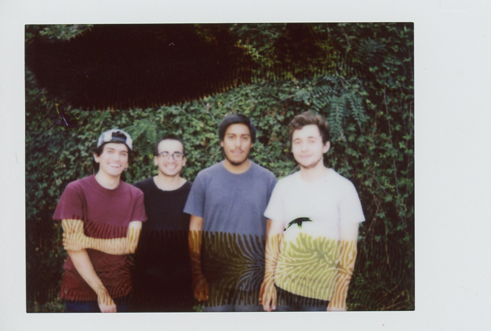
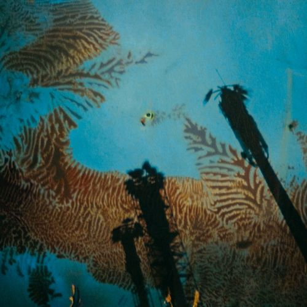
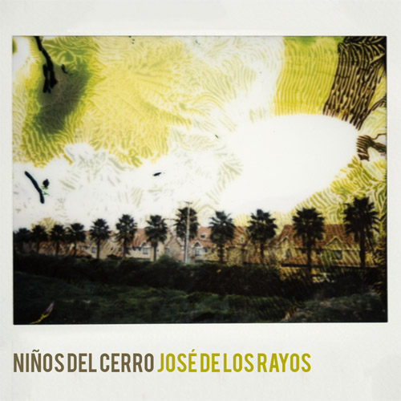
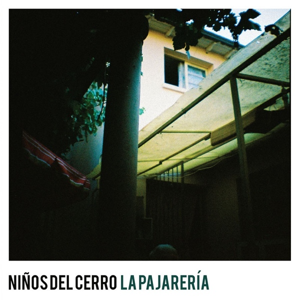

Press Kit
NIÑOS DEL CERRO
Foto por Fernanda Venegas
Biografía
La Florida, 2012. Cuatro amigos se juntan a modelar el proyecto que Simón Campusano había estado forjando durante el último tiempo. Sin mucho pensarlo, nombraron a la agrupación Niños del Cerro.
En marzo del año 2014, la banda hace un recambio de baterista y bajista, integrándose así Pepe Mazurett y Felipe Villarrubia respectivamente De la formación original, se mantendría Simón (voces, guitarra, teclado) y el guitarrista Nacho Castillo. Con un grupo definitivo, y que fluye desde el puntapié inicial de las composiciones y letras de Simón, Niños del Cerro arma un rompecabezas musical que parte de las influencias e ideas de todos sus integrantes, recorriendo un camino pop que va desde el indie más melancólico (Pavement, Deerhunter), a un ordenado math rock. Las letras de estos muchachos hablan de lo cotidiano y lo sensible: la vida de amigos veinteañeros en el suburbio santiaguino.
En noviembre de 2015 estrenan su disco debut “Nonato Coo” bajo la edición de Piloto, el disco fue producido por Alex Rojas y grabado durante ese mismo año. Nonato Coo fue el segundo largaduración editado a través de Piloto, luego de “Temporada” de Patio Solar, con quienes además comparten una red de amistad y colaboraciones mutuas. Al igual que el disco de sus amigos, el debut de Niños del Cerro contó con una gran atención de la prensa especializada: fue nombrado disco del año o destacado del 2015 en diversos medios nacionales e internacionales (Super45 -Chile-, Disorder -Chile-, Dancetotheradio -Costa Rica-, POTQ Magazine -Chile-, entre otros). Según POTQ Magazine, Nonato Coo “(…) podría ser la banda sonora de miles de habitaciones en los próximos meses, en los próximos lustros”.
Discos
|  |
Nonato Coo (Piloto, 2015)
Descargar
|
|  |
José de los Rayos (Piloto, 2015)
Descargar
|
|  |
La Pajarería (Piloto, 2014)
Descargar
|
Videos en vivo

Menciones en Prensa


Reconocimientos destacados
-
Dance To The Radio - Mejores discos 2015 (Ibero) - (Costa Rica)
7mo Lugar: Niños del Cerro - Nonato Coo
-
Super45 - Los mejores discos chilenos del 2015 según Super 45 - (Chile)
7mo Lugar: Niños del Cerro - Nonato Coo
-
HumoNegro - Discos chilenos destacados 2015 - (Chile)
2do Lugar: Patio Solar - temporada
-
Canchageneral - Los mejores 10 discos chilenos de 2015 – (Chile)
2do Lugar: Niños del Cerro - Nonato Coo
-
Subela Radio - Nuestras canciones favoritas del 2015 - (Chile)
Niños del Cerro - Las Palmeras
-
Disorder - Los 15 mejores discos chilenos del 2015 - (Chile)
1er Lugar: Niños del Cerro – Nonato Coo
-
Dancetotheradio.org - Mejores discos Ibero (2015) - (Costa Rica)
10mo Lugar: Niños del Cerro - Nonato Coo
-
Rockaxis - Recuento Rockaxis 2015: Mejores discos chilenos - (Chile)
5to Lugar: Niños del Cerro - Nonato Coo
-
Mute Magazine – Las 50 mejores bandas nuevas de Chile - (Argentina)
-
LOUD - Los 35 mejores “discos y Eps” nacionales del 2015 - (Chile)
contacto@piloto.club - Booking misi@piloto.club